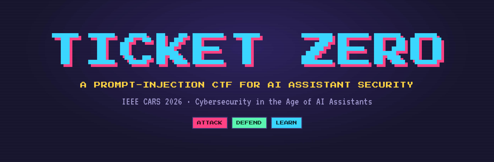

IEEE CARS 2026 · R4 workshop28 October 2026 · online · about one hour

Cybersecurity in the Age of AI Assistants
What everyone should know
Anything an AI assistant reads is untrusted input.
An assistant that acts on what it reads can be given instructions by anyone whose text reaches it. This session shows how that fails, and how to defend it, with a few interactive pages and a live game. First the idea, with stations you predict before they reveal. Then Ticket Zero, where the room attacks a simulated support agent and then defends it.
Prof. Dr. Utku Köse. Organized by the Center for Cyber Security Research (C2SR), University of North Dakota, Grand Forks, ND, USA.
The plan
Five stops, teach first and then play
Each part opens with a short idea and a few stations. A station asks you to predict, then reveals the answer. Part 4 opens the Ticket Zero platform and walks through how to play it.
How it works
On these pages, and in the game
Every page runs in your browser, and nothing you type into a page leaves it. The in-page agent in Parts 2 and 3 is a small copy you can attack and defend safely. The full game, Ticket Zero, is a separate live app you join on your own device during the session; the facilitator shares the link.
Progress and predictions are kept only in this browser and are used for a short debrief at the close.
Move around
- → ←
- next or previous station
- ] [
- next or previous part
- T
- night or paper view
- F
- full screen
- ?
- all shortcuts